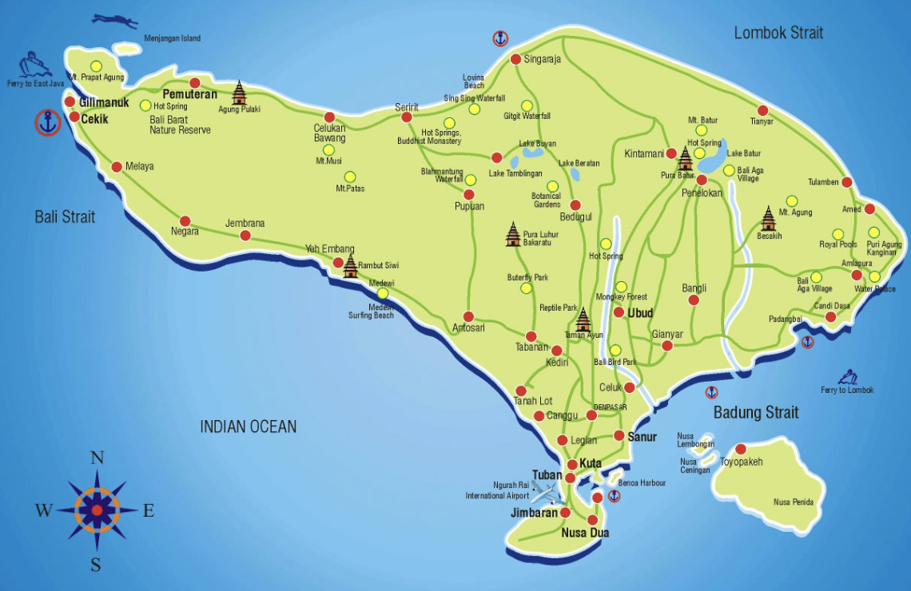
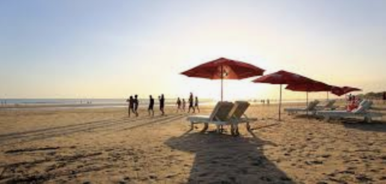
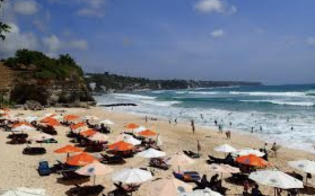
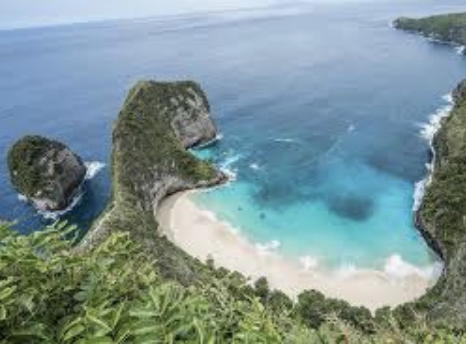

Bali Beaches
Bali Beaches

BALI - is a province of Indonesia and an island on the westernmost of the Lesser Sunda Islands. Located on the east of Java and west of Lombok, the province includes the island of Bali and a few smaller neighbouring islands, notably Nusa Penida, Nusa Lembongan and Nusa Ceningan. The provincial capital, Denpasar, is the most populous city on the Lesser Sunda Islands and the second largest in
Eastern Indonesia after Makassar. Bali is the only Hindu-majority province in Indonesia, with 83.5% of the population adhering to Balinese Hinduism.



SEMINYAK is Bali's most stylish and upscale beach resort area. It's home to among the island's most
luxurious resorts. It also hosts a number of fine restaurants and boutiques.
DREAMLAND BEACH is among the collection of ‘hidden’ beaches of Bali: stretches of white sand secluded by limestone cliffs that line the rugged coastline of the southern Bukit Peninsula.
NUSA PENIDA is the largest and most exotic of the three Nusa Islands,thanks to its collection of unique
Hindu temples and picturesque natural features of cliff formations and lagoons.